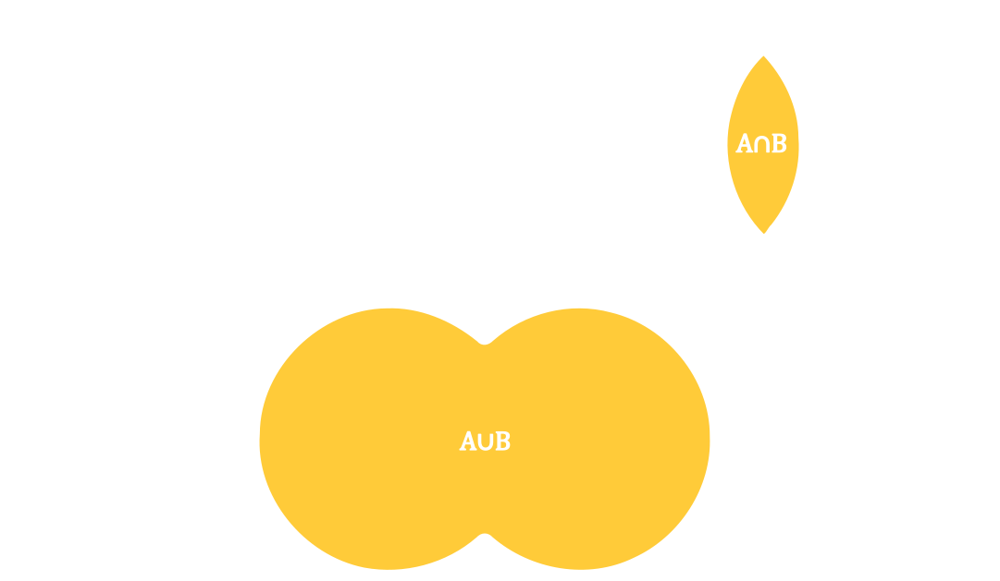
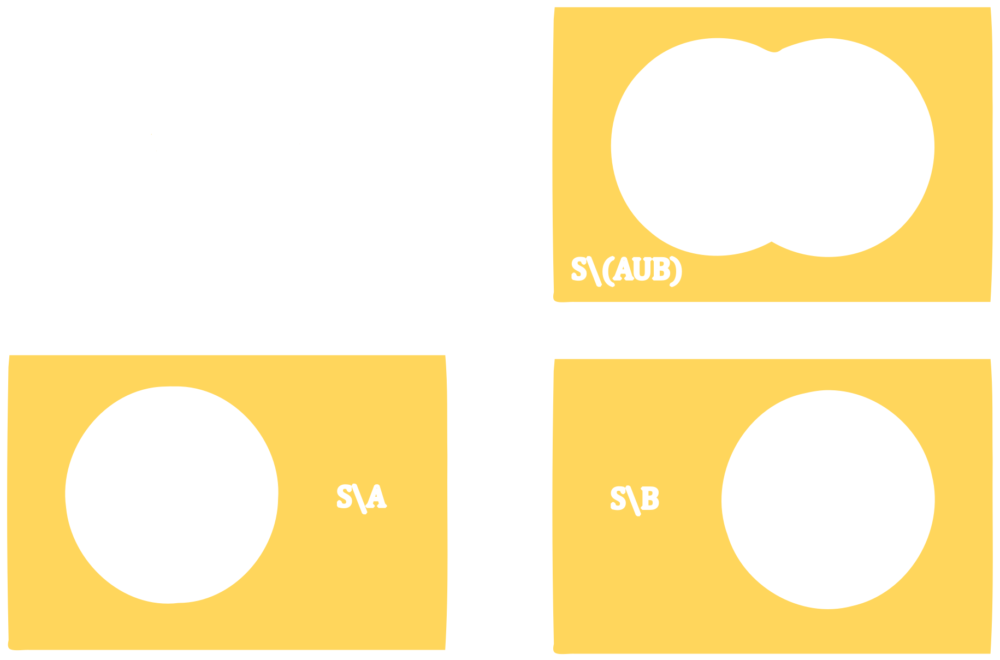
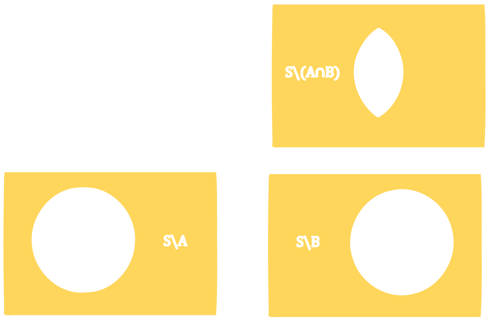

<!DOCTYPE html>
<html lang="en">

<head>
  <meta charset="UTF-8">
  <meta http-equiv="X-UA-Compatible" content="IE=edge">
  <meta name="viewport" content="width=device-width, initial-scale=1.0">
  <title>MTHE 224: Applied Math for Civil Engineers</title>

  <!--
    - favicon
  -->
  <link rel="shortcut icon" href="./assets/images/logo.ico" type="image/x-icon">

  <!--
    - custom css link
  -->
  <link rel="stylesheet" href="../assets/css/style.css">

  <!--
    - google font link
  -->
  <link rel="preconnect" href="https://fonts.googleapis.com">
  <link rel="preconnect" href="https://fonts.gstatic.com" crossorigin>
  <link href="https://fonts.googleapis.com/css2?family=Poppins:wght@300;400;500;600&display=swap" rel="stylesheet">
</head>


<body>
    <main>

        <!--  #SIDEBAR   -->
        <aside class="sidebar" data-sidebar>
    
          <div class="sidebar-info">
            <div class="info-content">
              <h1 class="name" title="MTHE 224" >MTHE 224</h1>
    
              <p class="title">Applied Mathematics for Civil Engineers</p>
            </div>
    
            <button class="info_more-btn" data-sidebar-btn>
              <ion-icon name="chevron-down"></ion-icon>
            </button>
    
          </div>
    
          <div class="sidebar-info_more">
    
            <div class="separator"></div>
    
            <ul class="contacts-list">
    
              <li class="contact-item">
    
                <div class="icon-box">
                  <ion-icon name="mail-outline"></ion-icon>
                </div>
    
                <div class="contact-info">
                  <p class="contact-title">Email</p>
    
                  <a href="mailto:Tyler.meadows@queensu.ca" class="contact-link">tyler.meadows@queensu.ca </a>
                </div>
    
              </li>
    
              <li class="contact-item">
    
                <div class="icon-box">
                  <ion-icon name="location-outline"></ion-icon>
                </div>
    
                <div class="contact-info">
                  <p class="contact-title">Location</p>
    
                  <address>127 Jeffery Hall, Queen's University</address>
                </div>
               </li>
               <li class = "contact-item"> 
                <div class="icon-box">
                  <ion-icon name = "calendar-outline"></ion-icon>
                </div>
                <div class = "contact-info">
                  <p class = "contact-title">Lecture Times</p>
                  <time>Mon: 11:30-12:30</time>
                  <time>Tue: 13:30-14:30</time>
                  <time>Thu: 12:30-13:30 </time>
                </div>
              </li>
    
            </ul>

    
        </aside>


        <!-- Main Stuff -->
        <div class="main-content">
               <!-- #NAVBAR  -->
               <nav class="navbar">
    
                <ul class="navbar-list">
                    <li class ="navbar-item">
                        <a href="../lectures/lecture01.html" class = "navbar-link">Previous</a>
                    </li>
        
                  <li class="navbar-item active">
                    <a href="../MTHE224.html?page=lectures" class = "navbar-link">Lectures</a>
                  </li>
        
                  <li class="navbar-item">
                    <a href="#" class="navbar-link">Next</a>
                  </li>
        
                </ul>
        
              </nav>
              <!-- Lecture Content--> 
              
            <article class="lecture active" data-page="lecture">
                <header>
                  <h2 class="h2 article-title">Lecture 02: Basic Set Theory</h2>
                </header>
                <div class = "lecture">
                    <p>In order to effectively talk about statistics, we will need to discuss probability, and in order to discuss probability effectively, we will 
                        need to start at the beginning, with basic set theory. 
                    </p>

                  <p> <b>Definition :</b> A <u>set</u> is a collection of objects. 
                    the members of a set are called <u>elements.</u></p>
                  <p> Usually, we define a set by which elements
                    it contains and write the set as a collection of elements, or a rule for membership
                    inside curly braces. For example, $A = \{a,b,c\}$ is a set called $A$ that contains elements
                    $a,b,$ and $c$. If an element $x$ is a member of a set $A$, then we write $x\in A$.
                  </p>
                  <p><b> Examples of Sets:</b></p>
                  <ul class = "lecture-list">
                    <li >Students in MTHE 224: $A = \{\text{people in this class}\}$ </li> 
                    <li>The Natural : $\mathbb{N} = \{0,1,2,3,...\} $</li>
                    <li>The Integers: $\mathbb{Z} = \{0,-1,1,2,-2,...\}$</li>
                    <li>The Rational Numbers: $\mathbb{Q} = \{x = \frac{m}{n} ~|~ n,m \in \mathbb{Z} \}$</li>
                    <li>The Real Numbers: $\mathbb{R} = \{x ~|~ x\in(-\infty,\infty)\}$ </li>
                  </ul>
                  <br>
                  <p> <b>Note:</b> There are several ways to write some of these sets. The real numbers can be more rigorously written as the set of all numbers that exist as a limit of Rational numbers.</p>
                  <p><b>Definition:</b> The <u>intersection</u> of two sets $A$ and $B$ is the set of elements that are in both $A$ and $B$.
                We write $$A \cap B = \{x\in A ~|~ x \in B \} = \{ x \in B ~|~ x \in A\}.$$ </p>
                  <p> <b> Definition:</b> The <u>union</u> of two sets $A$ and $B$ is the set that are in either $A$ or in $B$ or in both. We write
                $$A \cup B = \{x ~|~ x\in B~ or~ x \in B \} $$</p>
                  <p> If $A$ and $B$ have no elements in common, we call them <u> disjoint</u>. The intersection of two disjoint sets $A$ and $B$ is called 
                the empty set, and we write $A\cap B = \varnothing = \{~\}.$  When we're talking
                about sets in the abstract sense, we'll usually use Venn diagrams to represent them. </p>
                  </div>

                <p> <b>Definition:</b> Let $A$ be a set. A set $B$ is a <u>subset</u> of $A$ if $A\cap B = B$. That is, every element of $B$ is also an element of $A$. If $B$ is a subset of $A$ we write $B\subseteq A$.</p>
                <p> <b>Definition:</b> Let $A$ and $B$ be sets. The complement of $B$ in $A$ is the set of elements in $A$ that are not in $B$. We write 
                $A \setminus B = \{x\in A~|~x\notin B\}$</p>
                <p> Often we will be talking about sets relative to one specific larger set $\mathcal{S}$. If there is no chance for confusion, we often write the complement of $B$ as $\mathcal{S}\setminus B = B^c$.</p>
                <p> <b> Example:</b> Let $A = \{1,2,3,4,...,10\}$, $B = \{2,4,6,8,10\}$, and $C = \{1,3,5,7,9\}$.
                    <ul class = "lecture-list">
                        <li > What is $B\cap C$?</li>
                        <li > Is $B$ a subset of $A$?</li>
                        <li > Is $A$ a subset of $A$?</li>
                        <li > Is $\varnothing$ a subset of $A$?</li>
                        <li > What is the complement of $B$ in $A$?</li>
                    </ul>
                </p>
                <p> <b>Demorgan's Laws:</b> Let $\mathcal{S}$ be a set, let $A\subseteq\mathcal{S}$, and let $B\subseteq\mathcal{S}$. Then
                <ul class = "lecture-list"> 
                    <li class = "lecture-item"> $\mathcal{S}\setminus(A\cup B) = (\mathcal{S}\setminus A)\cap (\mathcal{S}\setminus B)$
                    </li>
                    <li class = "lecture-item"> $\mathcal{S}\setminus(A\cap B) = (\mathcal{S}\setminus A)\cup (\mathcal{S}\setminus B)$
                        
                    </li>
                </ul> 
                </p>

                <h2> Exercises</h2>
                <p>
                    <ul class = "lecture-list">
                        <li> Let $\mathcal{S}$ be a set and suppose $A\subset \mathcal{S}$. Explain why $(A^c)^c = A$.</li>
                        <li> Use DeMorgan's laws to show $$(A\cap B)^c \cup C = (A\cap C)^c \cup (B\cap C)^c.$$
                            Confirm this with a Venn Diagram. 
                        </li>
                        <li> Let $\mathcal{S} = \mathbb{Z}$, $A = \mathbb{N}$, and $B=2\mathbb{Z} = \{2x~|~x\in\mathbb{Z}\}$. Find an expression for each of the following:
                            <ul class = "example-list">
                                <li>$A^c$</li>
                                <li>$\mathcal{S}$</li>
                                <li>$(A\cup B)^c$</li>
                                <li>$(A\cap B)^c$</li>
                                <li>$\varnothing^c$</li>
                            </ul>
                        </li>
                    </ul>
                </p>
                </div>
            
              </article>

        </div>
    </main>

    <!-- custom js link-->
    <script src="../assets/js/script.js"></script>

    <!-- ionicon link -->
    <script type="module" src="https://unpkg.com/ionicons@7.1.0/dist/ionicons/ionicons.esm.js"></script>
    <script nomodule src="https://unpkg.com/ionicons@7.1.0/dist/ionicons/ionicons.js"></script>

    <!-- MathJaX-->
    <script>
        MathJax = {
          tex: {
            inlineMath: [['$', '$'], ['\\(', '\\)']]
          },
          svg: {
            fontCache: 'global'
          }
        };
        </script>
        <script type="text/javascript" id="MathJax-script" async
          src="https://cdn.jsdelivr.net/npm/mathjax@3/es5/tex-svg.js">
        </script>
</body>
</html>